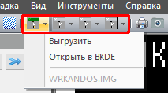
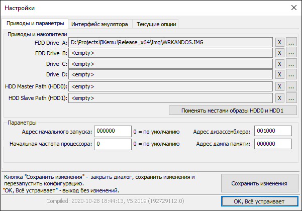

Итак, Вы скачали эмулятор, запустили его, а что делать с ним дальше не знаете? Тогда эта инструкция для вас.
В состав эмулятора не входят ни игры, ни разные образы дискет, потому что их легко найти в интернете. А интернет у Вас есть, потому что именно из него Вы и скачали эмулятор.
Но чтобы найти что-то в интернете, надо знать, что искать, а если не знаешь что, знать, хотя бы где искать.
Практически все образы дискет, какие где-то кто-то когда-то выкладывал в общий доступ, можно найти в двух местах:
Автор надеется, что Вы хотя бы бегло проглядели документацию к эмулятору. Потому что там хоть и вкратце, но перечислены все его возможности.
Вообще говоря, хранить bin файлы и образы дискет можно где угодно, но удобнее всего, в предназначенных для этого директориях. Bin файлы в директории эмулятора "Bin", а образы дискет и жёстких дисков – в директории "Img". Потому что именно с этих директорий начинается обзор в окне выбора файлов при открытии и загрузке нужного файла.
Понятно, что дальше можно выбраться из этих директорий и шариться по всем дискам компьютера, но каждый раз делать это не надоедает первые два-три раза, а потом всё же приходишь к выводу, что хранить данные лучше там, где к ним добраться быстрее.
Итак, Вы распаковали архив с эмулятором, закидали туда нужных Вам образов и bin файлов. Хотя нет, сразу после распаковки, вы немедленно запустили эмулятор. И запустилась конфигурация, заданная по умолчанию в файле bk.ini. (Эта конфигурация может быть любой из списка, это зависит от того, какая была у автора конфигурация включена при тестировании, когда он помещал новый файл bk.ini в дистрибутив.) Вы посмотрели на окошки, потыкались в менюшки, и закрыли программу, потому что непонятно, что делать.
Будем учиться пользоваться.
Для начала, из меню "Конфигурация", выбираем и запускаем нужную конфигурацию. Если в конфигурации предполагается дисковод, и нужно загрузиться с какого-нибудь образа, то этот образ нужно примонтировать в нужный дисковод. Загрузка делается последовательно с дисководов A:, B:, (C:, D:), последние два есть только в конфигурации со стандартным КНГМД. Соответственно загрузка будет происходить с первого загрузочного образа, найденного в этих дисководах. Монтирование делается с помощью кнопок на панели инструментов "Стандартная".

На рисунке красным прямоугольником обведены эти кнопки. Пустой дисковод обозначается серой иконкой, дисковод с дискетой внутри - иконкой с зелёной полосой. Нажатие на иконку вызывает диалог выбора файла, нажатие на треугольничек справа от иконки вызывает меню, в котором в самом низу можно поглядеть, какой образ примонтирован. Если иконка неактивна, значит в данной конфигурации этого дисковода нет, не предусмотрен.
Или, для продвинутых пользователей, - путём редактирования файла bk.ini в каком-либо текстовом редакторе. Кстати, редактировать файл bk.ini при запущенном эмуляторе бесполезно: изменения эмулятор всё равно не воспримет, а при закрытии даже затрёт все ваши труды настройками, которые были на момент закрытия эмулятора.
Если в конфигурации предполагается контроллер HDD, то образ HDD так же необходимо примонтировать. Но, как и с настоящими HDD, это сделать нельзя при работающем эмуляторе. Примонтировать образ HDD можно либо опять же ручной правкой файла bk.ini, либо воспользовавшись опцией "Настройки эмулятора". Она вызывает специальное окно, в котором можно изменить почти все параметры, заданные в файле bk.ini. И в самой первой вкладке как раз можно управлять примонтированием или отмонтированием образов, как дискет, так и HDD.

A:, B: - это дисководы, которые есть во всех конфигурациях с контроллером дисковода и HDD.
C:, D: - это дисководы в конфигурациях со стандартным КНГМД, или разделы HDD в конфигурациях с контроллерами СМК-512 или Самара, или отсутствуют в конфигурациях с контроллером А16М.
Ну и два HDD. мастер и слейв.
Кнопка с крестиком - удалить образ из слота, т.е. отмонтировать. Кнопка с "..." - выбрать нужный образ, т.е. примонтировать.
После того, как будут выбраны нужные образы и примонтированы в нужные слоты, надо нажать кнопку "Сохранить изменения". В результате чего эмулятор перезапустит текущую конфигурацию.
Для загрузки bin и wav файлов нужен индивидуальный подход. На БК-0010(01), БК-0011 и БК-0011М это делается по своему, и как это делается, нужно почитать документацию.
Для БК-0010(01) это следующие документы:
00001-01.32.03 - БK-0010. ДРАЙВЕР-МОНИТОРНАЯ СИСТЕМА - для того, чтобы узнать, как загрузить файл в мониторе БК10.
00001-01.34.09 - Программное обеспечение микро-ЭВМ "Электроника БК0010". "Электроника БК0010Ш". Язык "Бейсик". Руководство оператора. - для того, чтобы узнать, как загружать/сохранять программы в Бейсике.
00009-01.90.01 - Микро-ЭВМ "Электроника БК 0010-01". Программное обеспечение Фокал. Руководство пользователя. - для того, чтобы узнать, как загружать/сохранять программы в Фокале.
Для БК-0011 это следующие документы:
00008-01.32.01 - БК-0011. РУКОВОДСТВО СИСТЕМНОГО ПРОГРАММИСТА - для того, чтобы узнать, как загружать/сохранять файл в мониторе БК11.
00008-01.34.04 - Персональная микро-ЭВМ "Электроника МС0513". Программное обеспечение. Бейсик. Руководство оператора. - для того, чтобы узнать, как загружать/сохранять программы в Бейсике.
Для БК-0011М это следующие документы:
00015-01.32.01 - БК-0011М - Руководство системного программиста. - для того, чтобы узнать, как загружать/сохранять файл в мониторе БК11М.
И ту же самую книжку по Бейсику, что для БК-11, но с учётом того, что Бейсик в БК11М практически такой же как и в БК10, так что и от него книжки будут полезны.
Да, да. Читать надо много, видосиков по книжкам никто не наснимал. Так что может ну его, этот эмулятор. Сложно там всё.